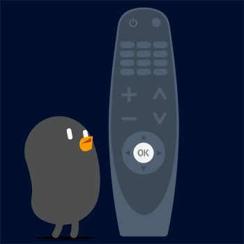

¿Qué es el control remoto Magic?

Puede seleccionar las funciones que desee de forma cómoda y sencilla moviendo el cursor en la pantalla de la TV y haciendo clic, al igual que haría con el ratón en la pantalla de un ordenador.
Puede adquirir el control remoto Magic por separado si no viene incluido.
Vinculación del control remoto Magic
Debe vincular el control remoto Magic con la LG webOS TV para su uso.
Antes de utilizar el control remoto Magic, vincúlelo como se indica a continuación:
Antes de utilizar el control remoto Magic, vincúlelo como se indica a continuación:
- Encienda la TV. Después de unos 20 segundos, oriente el control remoto hacia la TV y, a continuación, pulse .
- El control remoto se registrará automáticamente y el mensaje de vinculación completada se mostrará en la pantalla de la TV.
Si no puede registrar el control remoto Magic, apague la TV y vuelva a intentarlo.
Nuevo registro del control remoto Magic
Si el puntero del mando a distancia Mágico no aparece en la TV, debe registrarlo de nuevo.
- Mantenga el mando a distancia apuntando a la TV y mantenga pulsado el botón hasta que aparezcan las instrucciones.
- Se elimina el registro anterior del control remoto y se vuelve a registrar.